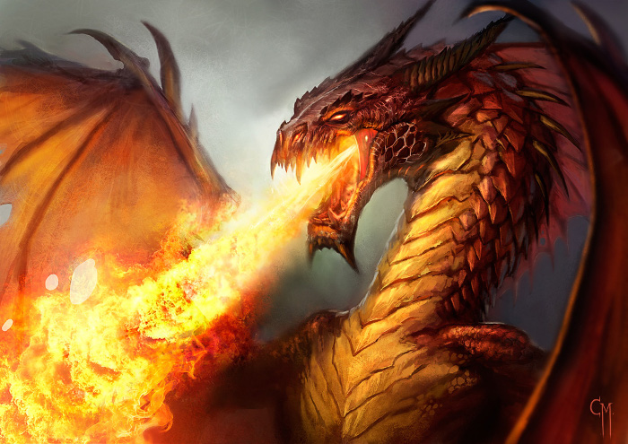

Bredebie et compagnie 3/3
Vous attendiez la fin de Bredebie et compagnie ? Eh bien, vous voici servis ! J’espère que ça vous plaira et que vous vous êtes un peu attachés à cette drôle de compagnie. Bonne lecture !
La montagne est ravagée. Je viens de souffrir pour la gravir, mais son sommet est encore plus hostile à notre venue que ses flans friables. La roche en fusion fume et nous brûle la plante des pieds. L’air chargé de cendres obstrue notre vue et nos bronches. Ca tousse comme si un tibia lui était resté en travers de la gorge. Pour une fois, les poils naturellement longs de mon nez me servent à quelque chose. J’inhale probablement moins de poussières que mes compagnons.
Les yeux perçants de Torïl nous permettent d’avancer précautionneusement dans ce paysage désolé et meurtri où je ne vois pas à un mètre devant moi. Il nous guide jusqu’à la source du brasier où nous espérons – plus ou moins – rencontrer le dragon. Quelle surprise est la nôtre lorsque nous tombons effectivement sur Esas, étendu sur les rocs calcinés, éventré !
Son sang doré dénote avec le reste de la scène, brillant sous son corps massif et écailleux. Il est mort, une épée enfoncée sous son aile recroquevillée, et je me sens soulagée de le trouver dans cet état. C’était lui ou nous, et le sort a bien choisi. Mes compagnons sont sous le choc. Aldanorn et Barnabé partent à la recherche de la princesse tandis que Ca se laisse lourdement tomber auprès du dragon. Ses bras ballants traînent largement dans la mare de sang de l’animal et lorsque, curieuse, elle se met à se lécher les doigts, elle semble en apprécier la saveur. J’ai devant les yeux une goule qui vient enfin de trouver son régime alimentaire préféré.
— Au moins, nous n’aurons pas à nous le farcir, lance Torïl derrière mon dos.
Il désigne le dragon et poursuit :
— Mon arc est fichu, je n’aurais rien pu faire.
Je me détourne de la créature pour faire face à mon compagnon.
— Tu te sens bien ?
Je ne peux m’empêcher de lui poser la question. Qu’il m’adresse ainsi la parole me perturbe.
— Je suis sobre, avoue-t-il calmement. Je crois que j’avais besoin de ça et c’est grâce à toi. Si tu n’avais pas proposé à la goule de me prendre comme casse-croûte, je serais encore en train de me saouler à l’auberge.
— Considère que nous sommes quittes, tu…
Je suis incapable de continuer pour dire « tu m’as sauvé la vie, merci ». Je ravale simplement ma salive en grimaçant.
— Tsss, les nains sont si fiers, plaisante-t-il.
Je sais qu’il a raison, mais je ne relève pas. Je constate que lui aussi n’est pas allé au bout de sa pensée. Il ne peut se résoudre à me remercier franchement. La voix chantante de Barnabé nous parvient tout à coup des ruines d’une vieille tour calcinée :
Oyez, oyez,
La Compagnie des miraculés,
Un nain, un elfe, un mage, une goule et un barde,
Tous embarqués dans une aventure périlleuse.
L’ennemi est terrible et le temps joue contre eux,
Mais l’amitié les amène à une victoire certaine.
Le dragon est tombé, le chevalier a repris sa princesse !
Même si la Compagnie n’a rien fait,
Le monde et ses aventuriers en sont changés à tout jamais. »
— On dirait bien que le punk a retrouvé l’inspiration.
Et voilà, c’est fini ! Qu’en avez-vous pensé ?
Bredebie et compagnie de Kurai Akemi est sous licence Creative Commons « Pas d’utilisation commerciale, pas de modification, 4.0 International ».
Crédit de l’image du dragon : caiomm via thedreamingwizard.com